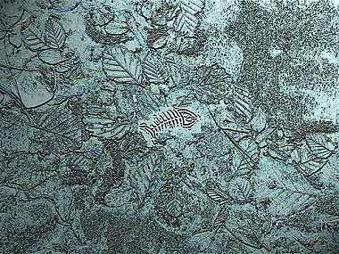

Karen Bryant
Missing Neruda
Black pearl cherries
wink and smile
like Clytie
twirling Apollo
round her fingers.
The long day beckons,
“Come,
my kiss-tart peaches,
my grass blade satyrs,
my slavish sunflowers,
come let me
blossom you.”
Drenched warm
in Spring rain,
sun-tongued,
suspended
pendulous
belladonna-mad cherries
split, bleed dusk.
Kali of the White Arms
Sliding silver Saturn rings
over fingers, over wrists,
bangles,
pushed up like sleeves.
Her eyes
spark wild.
Stripped bare, Saturn careens.
Stars tripkiss collide.
Violet supernova
crescendos reorder.
Under bedsheets,
she divides.
Love-mad twins spin
faster, faster, ever faster,
feet slap skin
in time with truck bomb drums.
Dante’s Dream

Shark fins
line up neat as soldiers
to cut the cord
between earth and sky.
I see
— from above —
like a low-ranking god,
the mesa,
cancerous with suburbia.
She spreads
her loose lover legs
around
lizard-back mountains.
I ache you here
and this
crag-souled desert
shudders
into green seas,
perfumes itself in spiced forests
of fir and dissolves
on the wet tongues
of carnelian orchids.
Karen Bryant teaches Art History and Humanities at Saint Leo University in Saint Leo, Florida. She can be found along the banks of the Manatee River feasting on the fruits of her garden: pomegranate, papaya, pineapple and Persian limes. One day she’ll return to the water and align with all that's best and bright.
|